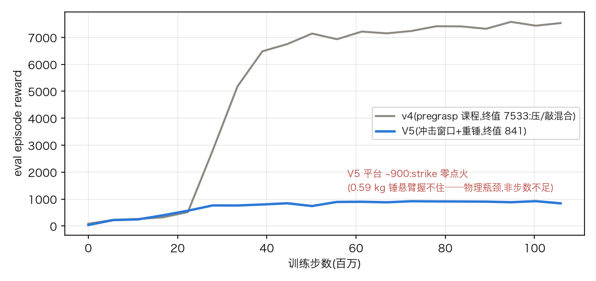
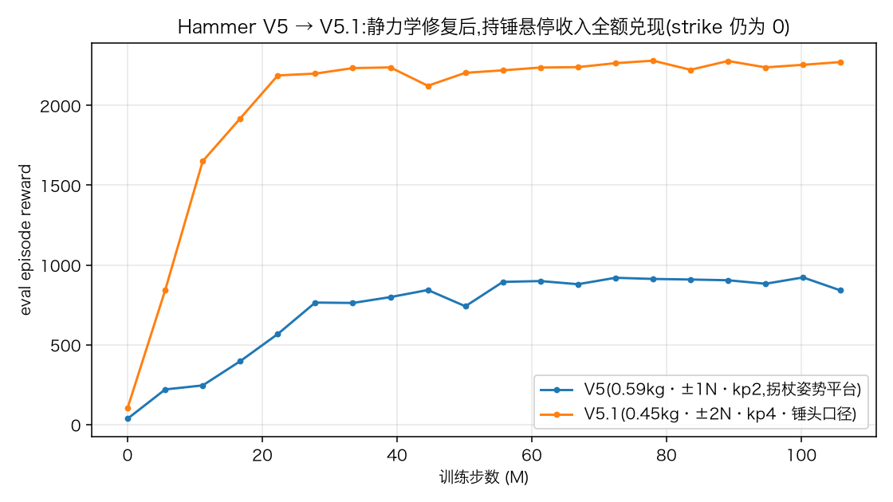

平台:LinkerHand L20(21 关节 / 16 执行器,5 组欠驱动耦合)装在 6 自由度浮动基座上,MJX 大规模并行(4096 环境),brax PPO,单卡训练。两天里两个任务从"编译不出来"走到"训练收敛",hammer 的 reward 走过五个版本。本页是研究记录:每个 reward 版本的效果视频、具体设计、失败解剖与修改方向。训练系统本身——碰撞简化(附 mesh 对比图)、JAX→Warp 迁移、版本坑清单、瓶颈解剖——在姊妹篇 工程记录。
已收敛与 LeapCubePick 逐项同超参的孪生任务
基线 A 的问题是"L20 这只欠驱动手到底能不能学"。参照系是上游已验证的 LeapCubePick(锚点:episode 内目标点步数 174/200 = 87%)。
| 项 | 权重 | 形式 |
|---|---|---|
| reach | 0.1 | 手→方块距离,密集 |
| lift | 1.0 | 方块离地 5 cm 即给 |
| palm_target / obj_target | 0.5 + 0.5 | 手/方块→空中目标点距离,全程密集——每抬高 1 cm 都涨分 |
| near / very_near | 10 + 20 | 接近目标点的大额奖励 |
105.8M 步(berlin H200,与他人共卡):最终 eval reward 5685,目标点步数 184.7/200(92%)——超过 Leap 锚点本身,远超合格线(Leap 的 50% = 87/200)。回放 6 种子 284–288/300 步在目标点,稳定性极高。
局限与方向:单 seed;正式基线结论需 ≥3 seed(协议已定,warp 后每 seed 仅 ~10 分钟)。reward 本身无已知问题。
五个 reward 版本的完整演化首个工具任务
场景:地面上一把锤(胶囊柄 + 钢盒头)、矮板上一根竖直滑轨钉(重力补偿,打到哪停到哪,全程 5 cm)。难点不在物理,在 reward:五个版本每一版都暴露一种教科书级的 reward 设计陷阱。
reach = 1 − tanh(5·‖palm − hammer‖) # 永远在线
lifted = (hammer_z > 5cm) # 瞬时二值门
hold / face_nail / drive / success 全部 × lifted # 藏在门后训满 105.8M 步,reward 117,success 全程为 0。策略停在唯一有梯度的地方:掌心贴着锤柄躺平吃 reach 分。从"贴着"到"举起 5 cm"之间梯度为零,还要冒丢 reach 分的风险——这正是 MetaWorld 已废弃的 v1 硬门结构。
修改方向(当时定的):调研 Adroit / MetaWorld v2 / DexPBT 的三派成功配方 → 密集项永不藏在门后、阶段门用锁存不用瞬时判据。
reach(举起后停发) + fingers(五指尖收拢,拇指×3)
→ grasp 锁存(指尖均距<6cm ∧ 掌距<12cm)
→ lift 斜坡(0→15cm 连续) + 首过 10cm 一次性 +25 + lifted 锁存
→ hold(举稳) + face_nail(long-tail) + drive(深度水平×10) + success(×20)
掉锤 → episode 结束(−50) | 锁存在 done 时自清(防 AutoReset 泄漏)阶段依序点亮,最终 reward 5603,回放 6/6 把钉子打平——但看视频:它举着锤子的同时用手腕把钉子压了下去。drive/success 只看钉子深度,不问"是谁弄下去的"。附带教训:staged 策略真的去抓锤后,双胶囊楔紧接触打爆了 5 迭代 Euler 求解(NaN),靠关节阻尼 + nan_to_num 缓解。
修改方向:给深度"记对功劳"——只有锤面造成的深度增量才计分。
# 合法深度累计器:每步深度增量,只有同时满足才计入 —
# 锤面在钉顶 4cm 内 ∧ 手掌+五指尖全部离钉顶 6cm 外 ∧ lifted
strike(×500,增量) / drive / success / 评估指标 全部只读合法深度
# 物理路线证伪:MuJoCo frictionloss 正则化在本求解器配置下饱和于 ~44N,
# 设多大都拦不住 50N 手压 —— 力阈值造不出来,只能 reward 记账。手压从此在所有通道零分——但训练平台在 ~400 分(纯"趴着抓住"的收益),举升锁存达成率只有 4–8%。原因发人深省:v2.1 的作弊客观上是课程——为了压钉必须先举锤,30 分/步的压钉大奖把策略拉过了举升关;堵掉之后,诚实的举后收益(3 分/步)打不过安逸趴着(2 分/步)+ 掉锤恐惧(−50)。v3.1 配平(reach 抓住即停、举后收益×3、掉锤 −50→−10)方向正确但不够:纯探索翻不过"持续举稳"这道墙。无视频(两版都在平台期被终止)。
修改方向:不能只堵坏路,要修好路——后段状态必须被直接采样到。
① 场景积分器 Euler → implicitfast:双胶囊楔紧接触在 5 迭代 Euler 下必炸、
implicitfast 下全稳 —— 训练 NaN 类问题根治(pick 场景保持 Euler 对齐 Leap)
② pregrasp 课程(TCDM/PGDM):离线搜索一个 800 步稳定的"指笼握锤"姿态
(手指 70% 屈曲成笼,锤柄放入,物理沉降验证),30% episode 由此出生、
grasp/lift 锁存已置 —— hold/运锤/砸击从第一步就有样本
③ reward = v3.1 全套(合法记账原封生效)22M 步破举升墙(72% episode 过锁存、掉锤率 0.09),33M 步 reward 5185,最终 7533;回放 6/6 全部合法打平(成功步数 239–274/300,成功口径 = 合法深度,手压构造上为零分);画面确认锤头做功、手体离钉。
四条肉眼可见的问题:①锤子只是勉强拿住;②钉子近乎一次"推"到底;③没有抡/蓄势的过程;④抓握手势不像人。对应的迭代臂(同一 env 类,--env-name 切换,四臂 PPO 超参逐项相同、TensorBoard 指标名一致,可直接叠图):
| env 名 | 机制 | 针对 | 文献依据 |
|---|---|---|---|
L20HammerNail | v4 原样 | 对照组 | — |
L20HammerNailImpact | 击打状态机:接触开始瞬间锤面下向速度 ≥0.5 m/s 才开启有效击,慢推永不开门;face_nail 换成 hover(钉上方对准+举高蓄势) | ②③ | 合法记账的自然延伸;TCDM hammer_strike 的挥击轨迹精神 |
L20HammerNailBlows | Impact + 每击进给上限 2 cm(打平 ≥3 击)+ 每落一击一次性 bonus + success 需 ≥3 击 | ②③ | Adroit 连续 N 步判据、allegro_kuka near_goal_steps 计数器 |
L20HammerNailPose | grasp 锁存加姿态条件:柄轴水平才算抓住;tool_pose 项奖励保持横握 | ①④ | SeqDex tool positioning 的 rot_dist 门 |
更远的方向:teleop 录制真人抓锤姿态替换指笼 pregrasp(本项目独有资产);人类包络校验(基座速度/冲量分布须"人能做");长程组合任务"开柜→放入"(PandaOpenCabinet + pick 元素,复用锁存+记账骨架)。
frictionloss 是交给约束求解器的软约束,本配置下输出饱和在 ~44 N,设 90 还是 900 都拦不住 50 N 慢压(最小模型连行程限位都被穿透);②阻尼当力阈值也不可行且方向相反——粘性力 ∝ 速度,damping 越大惩罚快冲击越狠、慢推照样推平(标定实测:damping 4000 时慢推 10 s 仍到 4.9 cm,单击反而只剩 0.9 mm)。damping 的正确用法是"每击进给限制器":它管不住慢推(交给 reward),但让每一击的咬入有物理上限——多次锤击从物理里自然涌现。| 改动 | 内容 | 标定依据 |
|---|---|---|
| 锤头加重 | 头 ×1.15 → 锤总重 0.59 kg(真实爪锤量级)。手指执行器只有 ±1 N:捏握拿不住重锤,只有指笼式 power grasp 抱得住——坏抓姿物理上直接脱手 | 扫描 head×{1.0,1.15,1.3,1.6} × damping |
| 钉阻尼 10→400 | 0.25 m 落锤单击咬入 1.17 cm → ~4 击打平;落锤自由反弹连击 4 s 内确实自然打平(检查实测 4.65 cm) | 同上,唯一同时满足"单击 0.8–1.5 cm"的组合之一 |
| 冲击窗口 | 一击只在接触开始瞬间锤面下向速度 ∈ [0.5, 2.5] m/s 时开启:下限拒慢推,上限就是人类速度包络(基座限速 0.5 m/s + 腕杠杆) | reward 侧;`hammer_face_linvel` 传感器 |
| 超速惩罚 | 任意时刻锤速超包络 → 持续负分(软约束,挥舞也不许超人) | — |
| 空中脱手终结 | 举起后锤离掌 >20 cm(飞脱)→ episode 终结,与掉地并列——重锤 + 弱指力下,坏抓姿的自然下场 | — |
| blow_bonus 防刷 | 一击必须实际进给 >1 mm 才计数发奖——钉子打平后空锤蹭不到分 | 堵"离开奖励"被刷的口子 |
五臂消融注册(超参逐项相同、TensorBoard 指标同名):L20HammerNail(v5 默认)、Staged(v4 对照)、Impact/Blows/Pose。
V5 首训结果(105.8M 步,纯训练 330 秒 = 5.5 分钟 @ 321k steps/s,warp 1.16):前四段全部达成——66–72% episode 过举升锁存、hold 130+/episode、掉锤率低、超速全程为零(人类包络生效);但 hover≈0.7、strike/success 全零:锤子从未被运到钉上方落击。曲线 55M 步后完全平台化(880–920 噪声带,后 50M 零增益)——100M 步足够,卡住的是物理不是步数。

lifted 锁存(它只看锤体原点高度),锤头拄地。课程姿态实验独立证实:指笼悬空后 600 步内被下垂的锤头拽脱手。教训:加难物理之前,先做"任务在该形态下是否可行"的静力学验算;锁存判据要盯真正的目标量(锤头高度,不是锤体原点)。V5.1 候选路线(2026-08-22 采纳④混合方案,见下节):① 竖持课程;② 工具级手 fork(±3 N);③ 锤回轻 + choke up;④ = ②+③ 折中:±2 N + 0.45 kg + 握点 0.08。
| 改动 | 内容 |
|---|---|
| 工具级手 fork | hammer 场景专用 l20_rh_mjx_floating_tool.xml:手指 forcerange ±1→±2 N、kp 2→4;pick 的手原封不动(基线 A 对照不受污染) |
| 锤回 0.45 kg | 头缩回 ~0.90 线性尺度;0.45 kg × 0.095 m 杠杆 ≈ 0.36 N·m,恰入 ±2 N 手的可行域(留挥动动载荷裕量) |
| 握点 0.08(choke up) | grip site 从柄端 0.05 前移到 0.08 = 柄质心:柄自重力矩归零、锤头杠杆 12.5→9.5 cm |
| 锤头口径锁存 | lifted/lift ramp/drop 全改盯锤面(face)高度而非锤体原点——拐杖姿势永远不再算"举起";举起后锤头放回地面同样终结 episode |
V5.1 结果(105.8M 步,warp 1.16,2026-08-22):eval 2272(V5 平台 880–920 的 2.5 倍),grasped 241/250、lifted(锤头口径)236/250、hover 230/250、超速 0、掉锤 ≈0;6 seed 回放 return 2844–2993——高度一致(V5 是 271–1563 的大离散),画面全程:地面抓锤 → 举到钉正上方高位 → 稳定悬停到集末。本小版本目标"把锤子真正举起来"达成。仍未过的关:strike/success 全零——悬停收入已满额,"向下挥击"这一步的探索没有发生(44M 步处 strike_std 0.028,偶发微击存在但未被放大)。

训练前不改任何代码,先回答一个问题:"砸"这个动作在当前 reward 口径下到底能不能拿到分? 方法:让训好的策略先跑 75 步到它惯常的悬停位,然后接管控制,手写"全速下降 → 回抬"三个循环(基座满舵;变体加腕转),逐步记录锤面速度、手–钉距离和每道记分门的开合。
| 反事实验算(同一条脚本轨迹重放记分逻辑) | 纯基座下砸 | 基座+腕转 |
|---|---|---|
| 现行口径(hand_clear 0.06,v_min 0.5) | 0 分 | 0 分 |
| hand_clear 0.045 + v_min 0.40 | 31.6 mm / 316 分 / 2 击 | 54.2 mm / 542 分 / 2 击 |
| 防作弊裕量:实测慢压/贴住阶段速度只有 0.01–0.24 m/s,v_min 0.40 仍有安全边际;手掌真压钉需贴到 ~0–2 cm,4.5 cm 门槛照样拦 | 注意的口子:窗口一旦开启、贴住持续压也计分——如需堵死,给 v5 默认也上 'blows' 臂的每击封顶(blow_cap) | |
| 改动 | 内容 | 依据 |
|---|---|---|
| 窗口下沿 0.5→0.4 | 接触瞬间锤面下向速度 ≥0.4 m/s 即开窗(上沿 2.5 人类包络不动) | 探针实测基座权限接触速度 0.46–0.48;慢压只有 0.01–0.24,margin 保住 |
| hand_clear 0.06→0.045 | 手离钉门槛放到 4.5 cm,匹配 choke up 后 9.5 cm 杠杆的击打几何(实测击打时手距 5.0–5.6 cm) | 手掌真压钉需贴到 ~0–2 cm,4.5 cm 照样拦 |
| blow_cap 进默认臂 | 每次接触计分封顶 2 cm——"到速开窗后持续压穿"只能赚一击的钱 | 反事实验算暴露的新口子 |
| hover 预算 + 高度带 | 每 episode hover 累计发 ~60 步即停(就位学费,不是年金);高度带 [0.12, 0.25] m,再高衰减归零(治"举出画面") | V5.1 的 2272 分年金 = 终局局部最优 |
| blow_bonus 15→50 | 首击从噪声(~25 分 vs 2900)抬成信号 | — |
| 第二段课程 | 30% in-hand 出生的一半改为持锤悬于钉正上方 0.15 m(xy 误差 0.4 cm、沉降验证 drift 0.1 mm)——离计分击打一步之遥,专治"状态分布从不路过挥击区" | V4 用同一招破举升墙;V5 时因笼弱失败,kp=4 笼已过携带测试 |
训练前门测试(纪律:gate 不通过不训练):同一脚本击打在新口径下重放——纯基座三次接触全部开窗、计 3 击、strike 262 分;加腕转 218 分;blow_cap 生效(48 mm 行程只计约一半)。reward 面从"焊死"变为"可达",放行训练。
V5.3 方向(已定,排在挥击点火之后):"握得越远分越高"的持续项——手掌沿柄轴离锤头的距离连续给分,杠杆越长力矩越大,±2 N 握不住就掉锤终结,物理自己当惩罚;同时长杠杆放大腕转的锤面速度,与冲击窗口正协同。不放进 V5.2:学习早期它把策略往可行域边缘推,先会砸再谈握远。
| 方向 | 做法 | 依据(代码级核对) |
|---|---|---|
| power-grasp 姿态先验(抓姿性价比第 1) | 手指关节对一个真实 power grasp 参考姿态的二次型惩罚,权重 ≈ 主任务项 1/10,恒开;参考姿态用 teleop 录一次真人握锤 | playground reorient hand_pose=-0.5 vs orientation 5.0;Hora poseDiffPenaltyScale=-0.3(先验点 = 预计算稳定抓姿缓存) |
| 指腹接触门控(第 2) | 掌心+各指中节布 MuJoCo touch sensor(MJX 图内原生支持),grasp 锁存加条件"拇指 pad 接触 ∧ ≥2 pad 接触"——指尖蹭永远锁不上 | DexPoint 的 ≥2 接触门(`relocate_env.py`);Gymnasium-Robotics 92-touch-sensor 布点先例 |
| 物理淘汰增强 | 持锤阶段对锤加随机 wrench 扰动 + 质量/摩擦域随机化,坏抓姿被脱手终结淘汰(零 reward 代码) | playground reorient `pert_config`;DexGraspNet 6 向重力筛选;RobustDexGrasp 扰动课程 |
| 多击节奏塑形 | 击间隔/退避高度的精细引导——先看 v5 物理涌现够不够再决定 | 本页 v5 设计注 |
| teleop 演示接入 | 真人 pregrasp 替换指笼;进一步可录挥锤轨迹做 TCDM 式 object-mimic reward | TCDM/PGDM(pregrasp 消融:去掉则大面积失败) |
| 不建议先试 | force-closure/σ_min 进 RL 回路:唯一在环先例只有 12 并行环境且依赖力传感器 readback,4096 并行下性价比垫底 | Chen et al. RSS 2026 workshop;DexGraspNet 的 FC 只用于离线合成 |
训练系统的全部内容——编译危机三层根因、碰撞几何从 82 凸包到 22 基元的简化(附三个时代的 mesh 对比图)、JAX→Warp 迁移与版本坑清单(naccdmax、版本配对、EGL、MULTICCD……)、瓶颈解剖与硬件结论、1.16 vs 1.11 源码级机制分析、kitchen 场景前瞻、以及"提出的问题 → 做的优化"对照表——见 灵巧手 RL 工程记录。速览:编译从小时级失败到秒级;吞吐 jax 51k → warp 1.11 177k → warp 1.16 260k+ steps/s;一次 105.8M 步完整训练 36 分钟 → 7 分钟以内。